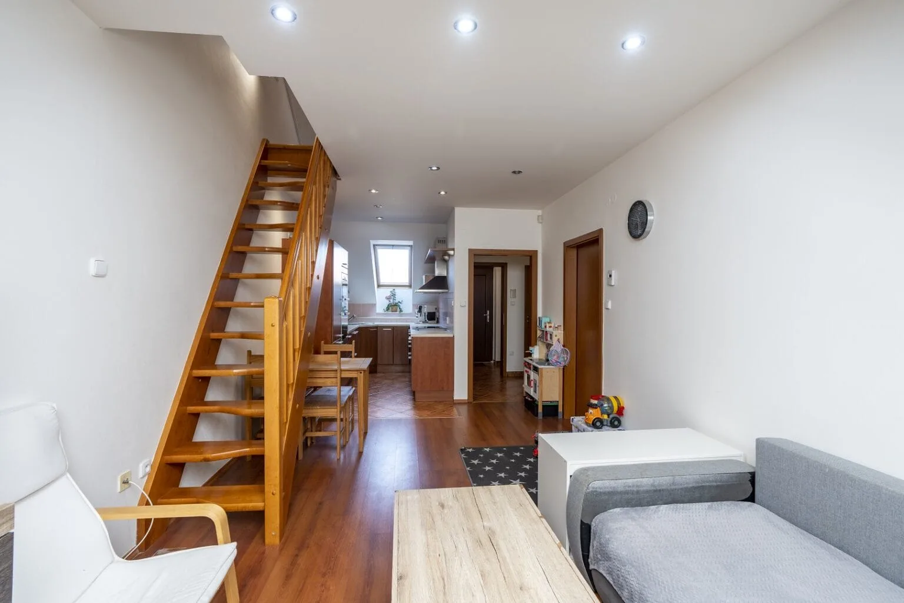
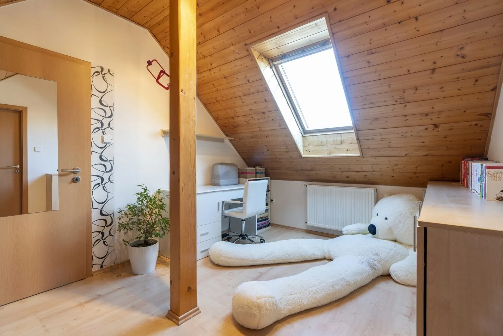

Někdy se byt neprodá kvůli ceně nebo lokalitě — ale překvapivě často za to mohou chyby, kterých si prodávající ani nevšimne. Dobrá zpráva je, že většina z nich jde napravit za jediné odpoledne a bez velkých nákladů. Tady je pět nejčastějších přešlapů a jak se jim vyhnout.
Přestřelená cena
Zdaleka nejčastější brzda prodeje. Když je cena nad trhem, inzerát visí týdny bez zájmu, postupně „okorá" a kupující si začnou říkat, že je s nemovitostí něco v nepořádku — vždyť se neprodává. Paradoxně pak prodáte za méně, než kdybyste rovnou nasadili reálnou cenu.
Řešení: vycházejte z cen, za které se podobné byty ve vaší lokalitě reálně prodaly, ne za které se jen nabízejí. Sledujte, jak rychle mizí srovnatelné inzeráty. Pokud váš inzerát po dvou až třech týdnech nevzbudil zájem, je to skoro vždy signál, že je cena moc vysoká.

Špatné nebo chybějící fotky
Tmavé, křivé, rozmazané fotky z mobilu odradí kupce dřív, než dočtou první větu popisu. A inzerát se třemi fotkami vzbuzuje podezření, že něco skrýváte. Fotky jsou výloha vaší nemovitosti — když je výloha neudržovaná, nikdo nevejde.
Řešení: věnujte fotkám čas, světlo a pořádnou přípravu prostoru, nebo je svěřte profesionálovi. Přidejte dost záběrů (ideálně 8 až 15) ze všech místností. První fotka musí být ta nejlepší — rozhoduje o tom, jestli na vás kupující klikne.
Nepřipravená nemovitost
Nepořádek, osobní věci a přeplněné police zmenšují prostor a brání kupujícímu představit si vlastní bydlení. Kupující nekupuje váš život — kupuje prostor, do kterého chce promítnout ten svůj. Když mu v tom brání vaše fotky na zdi a krabice v rohu, ztrácíte ho.
Řešení: ukliďte, odosobněte, odstraňte přebytečný nábytek a zvažte homestaging. I základní příprava udělá obrovský rozdíl ve vnímání prostoru.

Slabý inzerát a málo kanálů
Pár vět a jediný realitní server dnes nestačí. Strohý popis typu „byt 2+1, dobrá lokalita" neprodává. A pokud inzerát visí jen na jednom místě, vidí ho jen zlomek možných kupců.
Řešení: napište popis, který prodává atmosféru, dispozici a okolí. Zveřejněte inzerát na více serverech a přidejte cílené kampaně na sociálních sítích, které osloví konkrétní zájemce podle lokality a zájmů. Vlastní web nemovitosti působí profesionálně a snadno se sdílí.
Neúprosnost při prohlídkách a vyjednávání
Zatajené vady, nepřipravené odpovědi nebo tvrdohlavost při vyjednávání umí prodej zabít na poslední chvíli. Když kupující na prohlídce vycítí, že něco nehraje, nebo když odmítáte jakékoli jednání o ceně, často prostě odejde k jiné nabídce.
Řešení: na prohlídku se připravte, mějte po ruce dokumenty a odpovědi na časté otázky, buďte upřímní ohledně stavu a buďte ochotní přiměřeně jednat. Vážného kupce si tím udržíte.
Závěr
Většina důvodů, proč se byt neprodá, je v rukou prodávajícího — a tím pádem i řešitelná. Cena, prezentace a propagace rozhodují nejvíc. Když je nastavíte dobře, prodej se obvykle rozjede.
Celý proces prodeje od A do Z popisujeme v kompletním návodu na prodej bez realitky. Kolik reálně zaplatíte provizi realitce — a proč se tomu dá vyhnout — rozebíráme v článku o provizích.
My v Bezmakléřích pomůžeme se vším od prezentace po cílené kampaně — napište si o nezávaznou nabídku.
Často kladené otázky
Pomůžeme vám prodat rychleji a za lepší cenu
V Bezmakléřích se postaráme o profesionální prezentaci, focení, inzerci i cílené kampaně — za jednorázový poplatek místo statisícové provize. Napište si o nezávaznou nabídku.
Napište si o nezávaznou nabídku